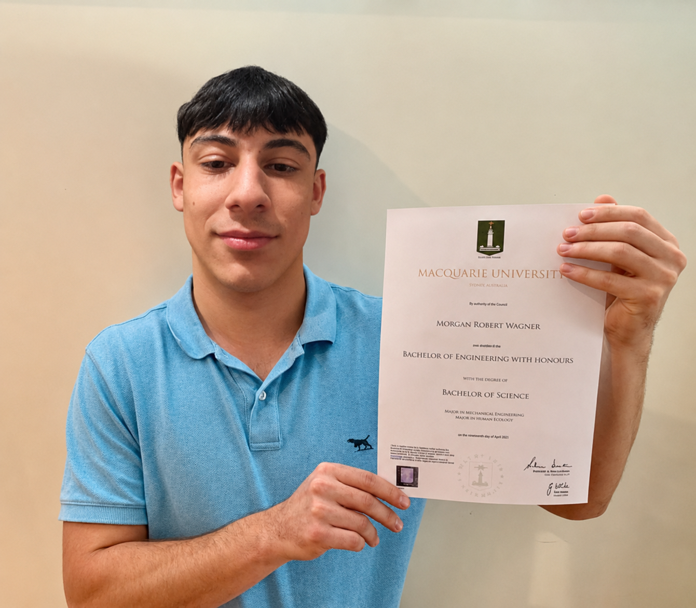

Early Years — Childcare
My slight education journey happened earlier than most. I started childcare at just 2 years old. Although this was a young age, it gave me the opportunity to be around others and develop great communication skills. It played a big part in who I am today as interacting with others is an important thing to have.
Prep to Year 12 — Hume Central School
I finished my schooling journey from Prep to Year 6 at St Dominic's Primary School Broadmeadows and from Year 7 to Year 12 I attended Hume Central Secondary College. These were places that shaped me into who I am today with good and bad times. I graduated with a goal in mind being to earn my Bachelor's degree in Cybersecurity and to build a beautiful future for myself.
La Trobe University — Bachelor of Cybersecurity
After graduating, I was accepted into Latrobe College where I am now pursuing my degree in Cybersecurity. Receiving the acceptance letter was a proud moment and a sign that hard work pays off. I researched and found that Latrobe offers the best Cybersecurity education available, which made the decision easy. I'm excited for the future and am committed to making the most of my education.
"If you can dream it, you can do it."
Walt Disney once said "if you can dream it, you can do it" — so I took it a step further and created an image of me holding up my future degree to solidify his saying.
